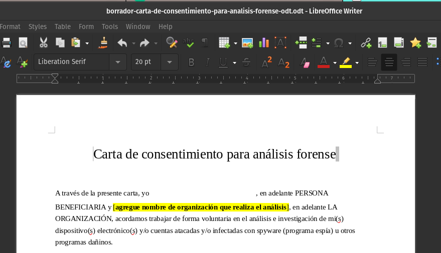

How to obtain and document informed consent during a forensic investigation?
This document has been translated by a non-native English speaker. We appreciate any contribution from advanced or native speakers to review and improve the language. You can contribute directly through the associated repository or get in touch with us at seguridad@socialtic.org. Thanks!
This document is part of a technical documentation repository whose main objective is to establish a baseline of proven, flexible and accessible knowledge to boost consented forensic analysis in support of civil society across the globe. To organize the contents, we use the technical documentation framework Diátaxis.
This resource fits within the how-to guides category. It describes what is informed consent and why it is important in the context of forensic investigations. It also includes a template that can be used by point of contacts, analysts and forensic labs to obtain and record consent during a forensic investigation.
Consideración Legal
This document does not detail and is not sufficient to establish and maintain chain of custody. These important procedures will be described in a separate piece of documentation in the future.
We appreciate references and reviews by the community of practice to support the development of this document.
What is informed consent and why is it important?
Informed consent is a principle applied in different fields that mandates a person must have sufficient information and understanding prior to making decisions about accepting risk. In the context of consented forensics analysis in civil society, it relates to the agreement and acceptance of actions required for collection, preservation and presentation of digital evidence.
A key aspect of a consent agreement is the capacity of the person who signs and accepts the risk to take an informed decision on the course of the investigation, or even reject the assistance. In the forensic field, this means providing enough information so that the beneficiary of support understands what actions, risks, rights and responsibilities are part of the investigation process. Informed consent is not just about signing a form, but a process led by the analyst or the forensic lab to communicate in a clear and transparent way with the beneficiary of support, and ensure their will is respected.
One of the reasons consent is necessary is related to the fact that digital evidence might include personal information, like contacts, files, pictures, applications, etc. This can carry risks, in case the information is exposed or not managed properly, and potentially could be subject to data protection regulation (GDPR, for example). In addition to communicating transparently about what is collected, forensic labs should make their best effort to reduce the collection of personal data, and to protect sensitive information with robust security policies.
Consideración Legal
Any data that is collected will be subject to data protection legislation of the local jurisdiction of residence of whoever is requesting the forensic analysis.
Moreover, depending on the focus of the organization providing the support and the nature of the investigation, there might be different approaches to presenting the results of the analysis. Often, forensic research leads to reports, campaigns, litigation efforts and other interventions that seek greater accountability. These actions and interventions can create risks, both for the organization conducting the research and for the victims, including legal prosecution, harassment and retaliation from governments or private companies. Before naming or using someone’s evidence as part of an accountability action, it is important to ensure there is informed consent.
Even in situations where there is no intent to publish results or initiate legal cases from the forensic evidence, there is both a risk and responsibility when collecting information for forensic purposes. Therefore, it is important that both parties (the analyst and the person asking for the analysis) identify possible risks, and agree on what information will be collected and how it will be used, so that risks can be acknowledged and minimized where possible.
As part of this process, the forensic analyst or threat lab should also point and explain any expectations, policies or terms of services that are associated with the provision of support. For example, an organization might ask beneficiaries of support not to speak publicly about their involvement or assistance to protect their staff. Access Now Helpline and Amnesty Tech have published terms or service and privacy policies that might be useful as reference.
Origin and application of informed consent in forensic investigations
Informed consent is not a practice exclusive to digital forensics. Some type of informed consent is usually required before agreeing to certain medical procedures, when being part of a scientific study or generally when engaging in activities that require the acknowledgment of a certain risk (think about skydiving and bungee jumping).
Some of the origins of consent track back to medicine. In the medical context, informed consent implies providing the patient with sufficient information about a given treatment, including risks, potential benefits, alternatives, expected results, among others. Ensuring that consent is well informed is an ethical and legal responsibility of medicine practitioners.
When engaging in a forensic investigation to support an individual or organization from civil society, the process of obtaining consent should clarify aspects like:
- What information is being collected? What personal data is included in the collection?
- What will happen during the investigation?
- With whom will this information be shared?
- What risks can emerge from the forensic analysis?
- What results can be expected?
- Can the name of the individual be used in publications? Can they be mentioned anonymously?
- For how long will the collected information be stored?
Ideally, consent should be asked before engaging in any evidence collection. A lot of the information listed above can be discussed and clarified verbally in the initial stages of an investigation, but it is important to also consider a written consent agreement that captures key agreements.
You should also take into account that many of the individuals asking for support are embedded in high risk contexts, going through traumatic situations. Establishing trust and engaging in active listening is key. While we do not focus on the principles of holistic response in this repository, we do recommend you consider and consult resources like the Psychological First Aid Manual from the organization Vita Activa.
Please also keep in mind that presenting a document full of legal language and description of risks can create stress and anxiety, especially if it is not accompanied with additional context and explanation, or if trust has yet to be established. Consent is a key aspect of forensic research, and a step in conducting additional research that will lead to greater accountability, but the priority should always be the wellbeing of the Human Rights Defender.
In the following section we present a draft of a letter of informed consent that can be adapted to the specific needs and particularities of each forensic investigation. We also provide guidance on how to adapt it and what to keep in mind when applying it.
Documenting informed consent
In order to create an informed consent document, aside from engaging in direct conversations with the requester of assistance, follow these steps:
1- Download the informed consent letter draft template. The document uses form fields, so that when exporting as a PDF it can be completed and signed easily.

In the following links you can download the consent letter templates in different formats:
- Consent letter in ODT
- Example of a PDF generated using the ODT template.
- Letter of consent as a Google Doc.
2- Adjust, complete and verify the following fields highlighted in yellow in the templates:
- Name of the organization: Include here the name of the organization conducting the forensic investigation
- Consent to name publicly or anonymously: If you intend to publish the results of the investigation, adjust the text as necessary. If you are not intending to publish results, delete this section.
- Goal of the investigation: Adjust the objective as necessary, indicating clearly what actions you expect to take place as part of the research, and what is the main objective.
- Information to collect: Detail the information that will be collected to enable the forensic analysis, ideally including specifics about the type of device and the contents that will be extracted.
- Privacy policy / terms of service link: If you already have a privacy policy, data protection or similar resources published, include the relevant link. If you don't have a policy, we recommend you include information on whether the collected data will be shared with 3rd parties and for how long it will be stored.
- Confidentiality of the investigation: If you would like to request that the participation on the investigation is kept as confidential, you can adjust this section to underline what is expected from the beneficiary.
3- Convert into a PDF and share with the person requesting the forensic analysis. Ideally, the informed consent form should be presented after an initial conversation, where you do a basic triage and clarify questions about the steps and scope of the investigation.
4- Request for document revision and signature. Make sure you clarify any question the beneficiary of support might have, and adjust as needed. Request the signature of the document. If necessary and appropriate for your context, you can use online signature services (like DocuSign, Dropbox Sign, SignNow) that facilitate the process of sending, signing and managing agreements.
5- Once you receive the consent document, verify that all fields are complete and store it for future reference in accordance with any data retention policy. Make sure you follow and respect the agreements when doing the collection, analysis and presentation.
What sensitive information is commonly collected during a forensic investigation?
The exact information to collect will depend on each case, and will be determined by the forensic analyst. Below we list some common forensic artifacts on Google/Android and iOS and the type of records that is usually included.
Android
-
Google Takeout: Google Takeout (available on takeout.google.com) allows the account holder to select from a range of data to export, that extends to all Google products and services. This includes, for example, metadata of the Google account, download records from PlayStore, information about the account activity, messages, among others. The list is extensive, and when engaging in a collection you should point to specific information useful for the analysis, and avoid personal data like photos, locations, etc. In the context of informed consent, you should provide clarity on what will be collected from the Google Takeout, and flag if any personal information is included.
-
Android Bugreport: The bugreport is a file generated by the Android to help in the diagnose and debugging of errors in the applications or operating system. In general, it does not include personal identifiable information, but it does include information about installed applications, wifi networks previously connected and log files that can describe actions performed by the user.
-
AndroidQF acquisition: AndroidQF can help extract information from Android devices that can be helpful for forensic analysis. The collected files do not contain personal data or sensitive information, and it is optional to generate a copy of the SMS and MMS messages. More concretely, AndroidQF collects configurations of the system, process list, service list, copy of logs, list of installed applications, list of files in the system and a copy of the temporal files. Optionally you can also extract a copy of the installed applications.
iOS
-
Diagnostic files: iOS diagnostic files include information that can be useful to diagnose and triage issues on the device. This includes logs of the operating system, information about the installed applications, details of the hardware and OS version, among others. In general, diagnostic files do not include personal data, although some logs might contain details like usernames, emails or applications.
-
Backup: iOS backups create a copy of the information on a device, so that it can be restored if necessary. Therefore, backups by default do include sensitive information from the device, like photos, Apple mail data, contacts, calendars, notes among others. It is recommended that the analyst implements solutions to reduce the amount of sensitive information after it is extracted and before it is shared.
Considerations when asking for informed consent
When you request and document informed consent for forensic investigations, take the following into account:
-
Protection and handling of personal data: During a forensic investigation, it is possible that the analyst obtains, stores and analyzes sensitive information including messages, contacts, lists of applications, among others. In addition to applicable data protection regulations, it is important to implement policies that can help reduce and protect sensitive records, and that align with any commitment established in the consent form. If you do not have an established policy, we recommend you create one. There are several resources on how to create information security policies, and published policies that can serve as inspiration, like CiviCERT’s information management policy.
-
Legal review: The information included in this guide, as well as the proposed draft consent form, are intended to serve as guidance for civil society organizations engaging in forensic research. The language might not be sufficient or appropriate in all contexts. If you have access to legal counsel, we recommend you engage them in the review and crafting of appropriate consent forms for your use case. If you don’t have access to legal counsel, the following organizations might be able to assist you:
- Hiperderecho (Perú, Latinoamérica) - hola@hiperderecho.org
- Access Now Helpline (Global) - help@accessnow.org (Request to be connected with the Tech Legal Counsel or forensic lab)
- Artículo 19 (Latin America) - info@article19.org
Conclusions
The objective of informed consent is to bring clarity, transparency and certainty, so that whoever is requesting support for a forensic investigation can understand potential risks, and is empowered to decide the course and limits of the research. Beyond just crafting and signing an informed consent document, it is important that the process is used to clarify key questions and manage expectations.
During the process of obtaining consent, you will also identify, acknowledge and accept risks. Being aware of such risks is important, not just for the beneficiary of assistance but also for the organization conducting the analysis. In response, organizations engaging in forensic research should review and implement adequate processes and policies to respond and protect sensitive information.